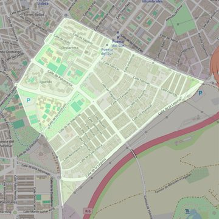

Santa Sofía
- Arciprestazgo
- Alcorcón
- Población
- Alcorcón
- Dirección postal
- c/ Munich, s/n
- Código postal
- 28923
- Extensión
- 1,80 km² (180 ha)
- Teléfono
- 916 428 446
- Correo electrónico
- santasofia-alcorcon@diocesisgetafe.es


Descargar mapaLímites según decreto
“Partiendo de la confluencia de la avenida Leganés con la avenida Alcalde José Aranda, arrancan por el eje de la avenida Alcalde José Aranda (en dirección suroeste); siguen por una línea imaginaria hasta la calle Parque Ferial (en dirección sureste), por el eje de la calle Parque Ferial (en dirección sureste), por el límite del término municipal de Alcorcón-Leganés (en dirección noreste), por el eje de la Avenida Leganés (en dirección noroeste) hasta la confluencia con la avenida Alcalde José Aranda, punto de partida.”